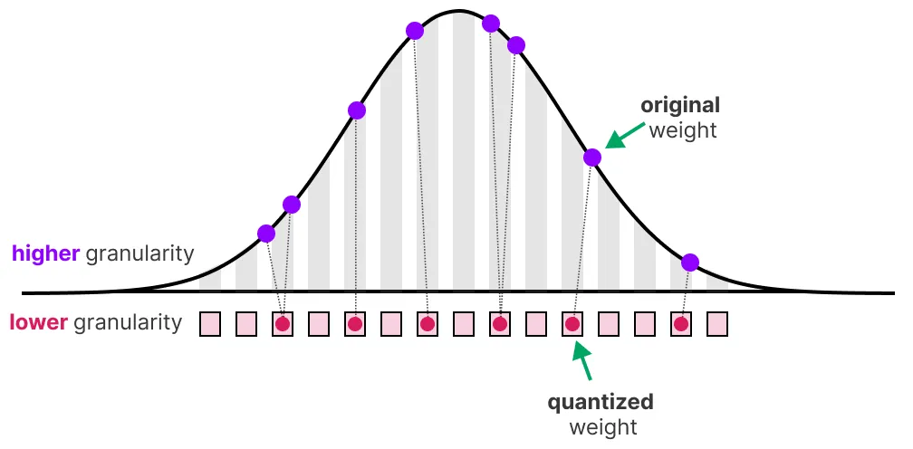
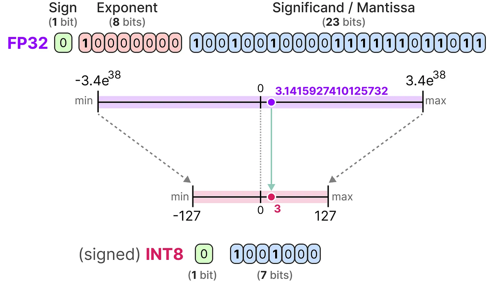
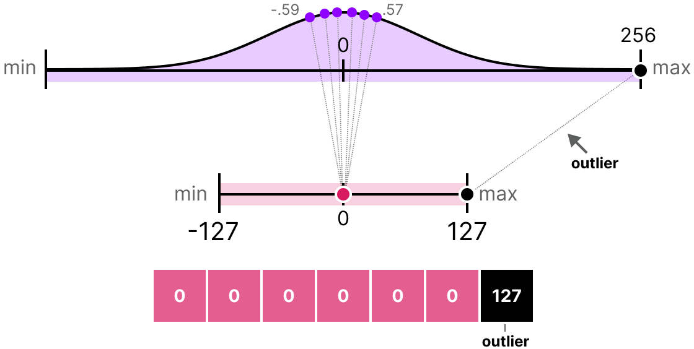
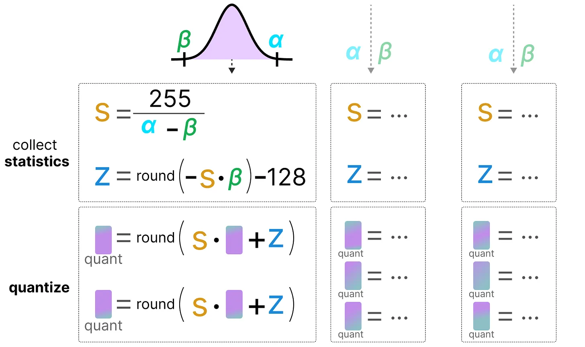
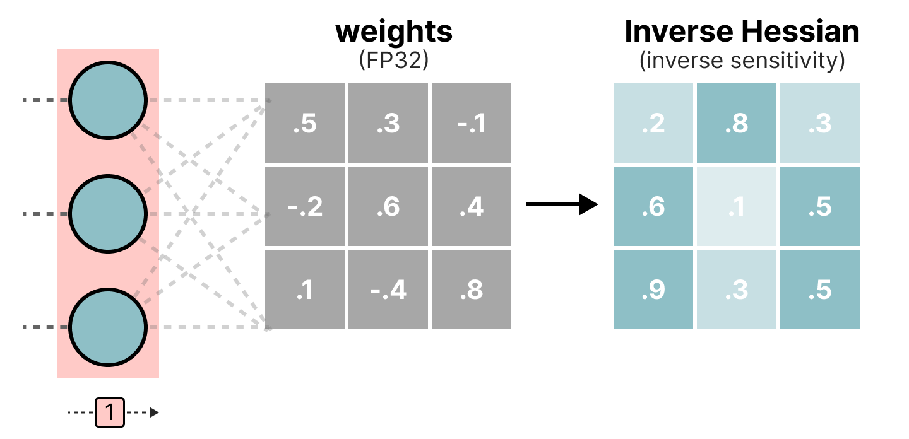
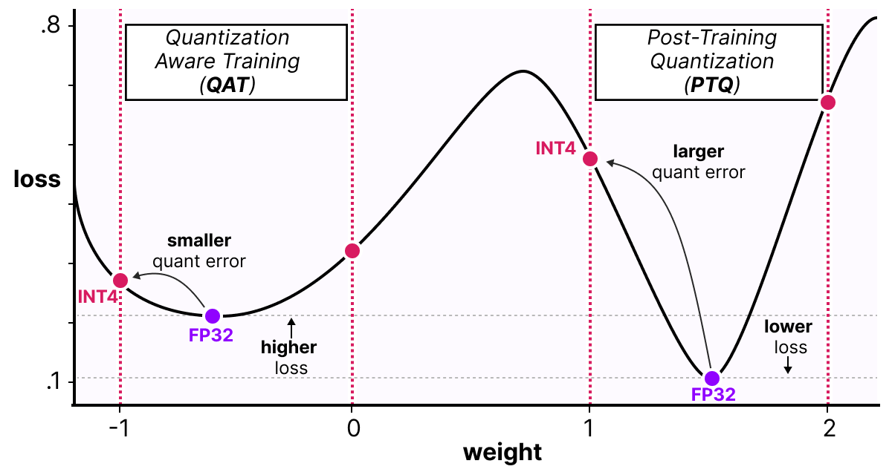
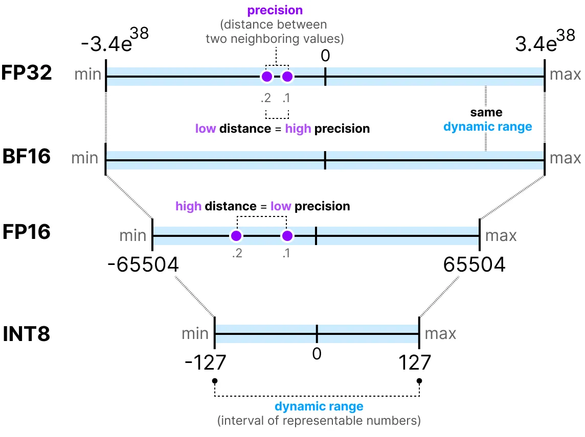

Quantization#
Les modèles de Deep Learning deviennent de plus en plus performants et volumineux. Prenons l’exemple des LLM (Large Language Models) : les meilleurs modèles open-source, comme Llama 3.1, comptent désormais des centaines de milliards de paramètres.
Charger un tel modèle sur un seul GPU est impossible. Même avec le GPU le plus puissant du marché (le H100, doté de 80 Go de VRAM), il faut plusieurs GPU pour l’inférence et encore plus pour l’entraînement.
En pratique, on observe que plus un modèle a de paramètres, meilleures sont ses performances. On ne souhaite donc pas réduire la taille des modèles. En revanche, on cherche à diminuer l’espace mémoire qu’ils occupent.
Ce cours s’inspire fortement de deux articles : un guide visuel sur la quantification et une explication détaillée de QLoRA. Les images utilisées proviennent également de ces deux articles.
Introduction à la quantification#
Le but de la quantification est de réduire la précision d’un modèle en passant d’une précision riche comme FP32 à une précision plus faible comme INT8.
Note : INT8 est la façon de représenter les entiers de -127 à 127 sur 8 bits.

Bien sûr, en réduisant le nombre de bits pour représenter les valeurs, on perd en précision. Pour illustrer cela, regardons une image :

On remarque un “grain” dans l’image, dû à un manque de couleurs disponibles pour la représenter. Ce que l’on veut, c’est réduire le nombre de bits pour représenter l’image tout en conservant au maximum la précision de l’image originale.
Il existe plusieurs manières de faire de la quantification : la quantification symétrique et la quantification asymétrique.
Point rapide sur les précisions communes#
FP16 : La precision et la dynamic range diminuent par rapport à FP32.

BF16 : La precision diminue fortement, mais la dynamic range reste la même par rapport à FP32.

INT8 : On passe à une représentation en entier.

Quantification symétrique#
Dans le cas de la quantification symétrique, la plage de valeurs de nos flottants d’origine est mappée de manière symétrique sur la plage de valeurs de quantification. Cela signifie que le 0 dans les flottants est mappé sur le 0 dans la précision de quantification.

Une des manières les plus courantes et les plus simples de réaliser cette opération est d’utiliser la méthode absmax (absolute maximum quantization). On prend la valeur maximale (en valeur absolue) et on réalise le mapping par rapport à cette valeur :

La formule est assez basique : considérons \(b\) le nombre d’octets que l’on veut quantifier, \(\alpha\) la plus grande valeur absolue. Alors on peut calculer le scale factor de la manière suivante : \(s=\frac{2^{b-1}-1}{\alpha}\) On peut alors effectuer la quantification de \(x\) comme ceci : \(x_{quantized}=round(s \times x)\) Pour déquantifier et retrouver une valeur FP32, on peut faire comme cela : \(x_{dequantized}=\frac{x_{quantized}}{s}\)
Bien entendu, la valeur déquantifiée ne sera pas équivalente à la valeur avant quantification :

et on peut quantifier les erreurs de quantification :

Quantification asymétrique#
À l’inverse de la quantification symétrique, la quantification asymétrique n’est pas symétrique autour de 0. Au lieu de cela, on map le minimum \(\beta\) et le maximum \(\alpha\) de la range des flottants d’origine sur le minimum et le maximum de la range quantifiée. La méthode la plus courante pour cela est appelée zero-point quantization.

Avec cette méthode, le 0 a changé de position, c’est pourquoi cette méthode est appelée asymétrique.
Comme le 0 a été déplacé, on a besoin de calculer la position du 0 (zero-point) pour effectuer le mapping linéaire.
On peut quantifier de la manière suivante : \(s=\frac{128 - - 127}{\alpha- \beta}\) On calcule le zero-point : \(z=round(-s \times \beta)-2^{b-1}\) et : \(x_{quantized}=round(s \times x + z)\) Pour déquantifier, on peut alors appliquer la formule suivante : \(x_{dequantized}=\frac{x_{quantized}-z}{s}\)
Les deux méthodes ont leurs avantages et inconvénients, on peut les comparer en regardant le comportement sur un \(x\) quelconque :

Clipping et modification de range#
Les méthodes que nous avons présentées présentent un défaut majeur. Ces méthodes ne sont pas du tout robustes aux outliers. Imaginons que notre vecteur \(x\) contient les valeurs suivantes : [-0.59, -0.21, -0.07, 0.13, 0.28, 0.57, 256]. Si l’on fait notre mapping habituel, on va obtenir des valeurs identiques pour tous les éléments sauf l’outlier (256) :

C’est très problématique car la perte d’information est colossale.
En pratique, on peut décider de clipper certaines valeurs pour diminuer la range dans l’espace des flottants (avant d’appliquer la quantification). Par exemple, on pourrait décider de limiter les valeurs dans la plage [-5,5] et toutes les valeurs en dehors de cette plage seront mappées aux valeurs maximales ou minimales de quantification (127 ou -127 pour INT8) :

En faisant cela, on diminue grandement l’erreur sur les non-outliers mais on l’augmente pour les outliers (ce qui peut également être problématique).
Calibration#
Dans la partie précédente, on a utilisé arbitrairement une plage de valeur de [-5,5]. La sélection de cette plage de valeur n’est pas aléatoire et est déterminée par une méthode que l’on appelle calibration. L’idée est de trouver une plage de valeur qui minimise l’erreur de quantification pour l’ensemble des valeurs. Les méthodes de calibration utilisées sont différentes selon le type de paramètres que l’on cherche à quantifier.
Calibration pour les poids et les biais : Les poids et les biais sont des valeurs statiques (fixes après l’entraînement du modèle). Ce sont des valeurs que l’on connaît avant de faire l’inférence. Souvent, comme il y a beaucoup plus de poids que de biais, on va conserver la précision de base sur les biais et effectuer la quantification uniquement sur les poids.
Pour les poids, il y a plusieurs méthodes de calibration possibles :
On peut choisir manuellement un pourcentage de la plage d’entrée
On peut optimiser la distance MSE entre les poids de base et les poids quantifiés
On peut minimiser l’entropie (avec le KL-divergence) entre les poids de base et les poids quantifiés
La méthode avec pourcentage est similaire à la méthode que nous avons utilisée précédemment. Les deux autres méthodes sont plus rigoureuses et efficaces.
Calibration pour les activations : À l’inverse des poids et des biais, les activations dépendent de la valeur d’entrée du modèle. Il est donc très compliqué de les quantifier efficacement. Ces valeurs sont mises à jour après chaque couche et on peut connaître leurs valeurs uniquement pendant l’inférence lorsque la couche du modèle traite les valeurs. Cela nous amène à la partie suivante qui traite de deux méthodes différentes pour la quantification des activations (et également des poids). Ces méthodes sont :
La post-training quantification (PTQ) : la quantification intervient après l’entraînement du modèle
La quantification aware training (QAT) : la quantification se fait pendant l’entraînement ou le fine-tuning du modèle.
Post-Training Quantification (PTQ)#
Une des manières les plus fréquentes de faire de la quantification est de le faire après l’entraînement du modèle. D’un point de vue pratique, c’est assez logique car cela ne nécessite pas d’entraîner ou de fine-tuner le modèle.
La quantification des poids est effectuée en utilisant soit la quantification symétrique, soit la quantification asymétrique.
Pour les activations, ce n’est pas pareil puisqu’on ne connaît pas la plage de valeurs prises par la distribution des activations. On a deux formes de quantification pour les activations :
La quantification dynamique
La quantification statique
Quantification dynamique#
Dans la quantification dynamique, on collecte les activations après que la donnée soit passée dans une couche. La distribution de la couche est ensuite quantifiée en calculant le zeropoint et le scale factor.

Dans ce processus, chaque couche a ses propres valeurs de zeropoint et de scale factor et donc la quantification n’est pas la même.

Note : Ce processus de quantification a lieu pendant l’inférence.
Quantification statique#
À l’inverse de la quantification dynamique, la quantification statique ne calcule pas le zeropoint et le scale factor pendant l’inférence. En effet, dans la méthode de quantification statique, les valeurs de zeropoint et scale factor sont calculées avant l’inférence à l’aide d’un dataset de calibration. Ce dataset est supposé être représentatif des données et permet de calculer les distributions potentielles prises par les activations.

Après avoir collecté les valeurs des activations sur l’ensemble du dataset de calibration, on peut les utiliser pour calculer le scale factor et le zeropoint qui seront ensuite utilisés pour toutes les activations.
Différence entre quantification dynamique et statique#
En général, la quantification dynamique est un peu plus précise car elle calcule les valeurs de scale factor et de zeropoint pour chaque couche, mais ce processus a également tendance à ralentir le temps d’inférence.
À l’inverse, la quantification statique est moins précise mais plus rapide.
PTQ : la quantification en 4-bit#
Dans l’idéal, on aimerait pousser la quantification au maximum, c’est-à-dire 4 bits au lieu de 8 bits. En pratique, ce n’est pas facile car cela augmente drastiquement l’erreur si l’on emploie simplement les méthodes que l’on a vues jusqu’à présent.
Il y a cependant quelques méthodes permettant de réduire le nombre de bits jusqu’à 2 bits (il est recommandé de rester à 4 bits).
Parmi ces méthodes, on en retrouve deux principales :
GPTQ (utilise seulement le GPU)
GGUF (peut également utiliser le CPU en partie)
GPTQ#
GPTQ est probablement la méthode la plus utilisée pour la quantification 4-bits. L’idée est d’utiliser la quantification asymétrique sur chaque couche indépendamment :

Pendant le processus de quantification, les poids sont convertis en l’inverse de la matrice Hessian (dérivée seconde de la fonction de loss) ce qui nous permet de savoir si la sortie du modèle est sensible aux changements de chaque poids. De manière simplifiée, cela permet de calculer l’importance de chaque poids dans une couche. Les poids associés à de petites valeurs dans la Hessian sont les plus importants car un changement de ces poids va affecter le modèle significativement.

On va ensuite quantifier puis déquantifier les poids pour obtenir notre erreur de quantification. Cette erreur nous permet de pondérer l’erreur de quantification par rapport à la vraie erreur et à la matrice Hessian.

L’erreur pondérée est calculée comme ceci : \(q=\frac{x_1-y_1}{h_1}\) où \(x_1\) est la valeur avant quantification, \(y_1\) est la valeur après quantification/déquantification et \(h_1\) est la valeur correspondante dans la matrice Hessian.
Ensuite, nous redistribuons cette erreur de quantification pondérée sur les autres poids de la ligne. Cela permet de maintenir la fonction globale et la sortie du réseau. Par exemple, pour \(x_2\): \(x_2=x_2 + q \times h_2\)

On fait ce processus jusqu’à ce que toutes les valeurs soient quantifiées. En pratique, cette méthode marche bien car tous les poids sont corrélés les uns avec les autres donc si un poids a une grosse erreur de quantification, les autres poids sont changés pour compenser l’erreur (en se basant sur la Hessian).
GGUF#
GPTQ est une très bonne méthode pour faire tourner un LLM sur un GPU. Cependant, même avec cette quantification, on a parfois pas assez de mémoire GPU pour faire tourner un modèle LLM profond. La méthode GGUF permet de déplacer n’importe quelle couche du LLM sur le CPU.
De cette manière, on peut utiliser la mémoire vive et la mémoire vidéo (VRAM) en même temps.
Cette méthode de quantification est changée fréquemment et dépend du niveau de bits de quantification que l’on souhaite.
De manière générale, la méthode fonctionne de la manière suivante :
D’abord, les poids d’une couche sont divisés en super block où chaque super block est à nouveau divisé en sub blocks. On va ensuite extraire les valeurs \(s\) et \(\alpha\) (absmax) pour chaque block (le super et les sub).

Les scale factors \(s\) des sub blocks sont ensuite quantifiés à nouveau en utilisant l’information du super block (qui a son propre scale factor). Cette méthode est appelée block-wise quantification.
Note : De manière générale, le niveau de quantification est différent entre les sub blocks et le super block : le super block a une précision supérieure aux sub blocks le plus souvent.
Quantification Aware Training (QAT)#
Au lieu d’effectuer la quantification après l’entraînement, on peut le faire pendant l’entraînement. En effet, faire la quantification après l’entraînement ne tient pas compte du procédé d’entraînement, ce qui peut poser des problèmes.
La quantification aware training est une méthode permettant d’effectuer la quantification pendant l’entraînement et d’apprendre les différents paramètres de quantification pendant la rétropropagation :

En pratique, cette méthode est souvent plus précise que la PTQ car la quantification est déjà prévue lors de l’entraînement et on peut donc adapter le modèle spécifiquement dans un objectif futur de quantification.
Cette approche fonctionne de la manière suivante : Pendant l’entraînement, un processus de quantification/déquantification (fake quantification) est introduit (quantification de 32 bits à 4 bits puis déquantification de 4 bits à 32 bits par exemple).

Cette approche permet au modèle de considérer la quantification pendant l’entraînement et donc d’adapter la mise à jour des poids pour favoriser de bons résultats du modèle quantifié.
Une façon de voir les choses est d’imaginer que le modèle va converger vers des minimums larges qui minimisent l’erreur de quantification plutôt que des minimums étroits qui pourraient provoquer des erreurs lors de la quantification. Pour un modèle entraîné sans fake quantification, il n’y aurait pas de préférences sur le minimum choisi pour la convergence :

En pratique, les modèles entraînés de manière classique ont un loss plus faible que les modèles entraînés en QAT lorsque la précision est grande (FP32), mais dès lors que l’on quantifie le modèle, le modèle QAT sera bien plus performant qu’un modèle quantifié via une méthode PTQ.
BitNet : quantification 1-bit#
L’idéal pour réduire la taille d’un modèle serait de quantifier en 1 seul bit. Cela paraît fou, comment peut-on imaginer représenter un réseau de neurones avec uniquement des 0 et des 1 pour chaque poids ?
BitNet propose de représenter les poids d’un modèle avec un seul bit en utilisant la valeur -1 ou 1 pour un poids. Il faut imaginer que l’on remplace les couches linéaires de l’architecture transformers par des couches BitLinear :

La couche BitLinear fonctionne exactement comme une couche linéaire de base, sauf que les poids sont représentés avec un unique bit et les activations en INT8.
Comme expliqué précédemment, il y a une forme de fake quantification permettant d’apprendre au modèle l’effet de la quantification pour le forcer à s’adapter à cette nouvelle contrainte :

Analysons cette couche étape par étape :
Première étape : Quantification des poids Pendant l’entraînement, les poids sont stockés en INT8 et quantifiés en 1-bit en utilisant la fonction signum. Cette fonction permet simplement de centrer la distribution des poids en 0 et convertit tout ce qui est inférieur à 0 en -1 et tout ce qui est supérieur à 0 en 1.

Une valeur \(\beta\) (valeur moyenne absolue) est également extraite pour le processus de déquantification.
Deuxième étape : Quantification des activations Pour les activations, la couche BitLinear utilise la quantification absmax pour convertir de FP16 à INT8 et une valeur \(\alpha\) (valeur maximum absolue) est stockée pour la déquantification.
Troisième étape : Déquantification À partir des \(\alpha\) et \(\beta\) que l’on a gardés, on peut utiliser ces valeurs pour déquantifier et repasser en précision FP16.
Et c’est tout, la procédure est assez simple et permet au modèle d’être représenté avec uniquement des -1 et des 1.
Les auteurs du papier ont remarqué que, en utilisant cette technique, on obtient de bons résultats sur des modèles assez profonds (plus de 30B), mais les résultats sont assez moyens pour des modèles plus petits.
BitNet 1.58 : On a besoin du zéro !#
La méthode BitNet1.58 a été introduite pour améliorer le modèle précédent, notamment pour le cas des modèles plus petits. Dans cette méthode, les auteurs proposent d’ajouter la valeur 0 en plus de -1 et 1. Cela ne paraît pas être un gros changement, mais cette méthode permet d’améliorer grandement le modèle BitNet original.
Note : Le modèle est surnommé 1.58 bits car \(log_2(3)=1.58\), donc théoriquement, une représentation de 3 valeurs utilise 1.58 bits.
Mais alors pourquoi 0 est-il si utile ? En fait, il faut simplement revenir aux bases et regarder la multiplication matricielle. Une multiplication matricielle peut être décomposée en deux opérations : la multiplication des poids deux par deux et la somme de l’ensemble de ces poids. Avec -1 et 1, lors de la somme, on pouvait décider uniquement d’ajouter la valeur ou de la soustraire. Avec l’ajout du 0, on peut maintenant ignorer la valeur :
1 : Je veux ajouter cette valeur
0 : Je veux ignorer cette valeur
-1 : Je veux soustraire cette valeur
De cette manière, on peut filtrer efficacement les valeurs, ce qui permet une bien meilleure représentation.
Pour réaliser la quantification en 1.58 bits, on utilise la quantification absmean qui est une variante de absmax. Au lieu de se baser sur le maximum, on se base sur la moyenne en valeur absolue \(\alpha\) et on arrondit ensuite les valeurs à -1, 0 ou 1 :

Et voilà, c’est simplement ces deux techniques (représentation ternaire et quantification absmean) qui permettent d’améliorer drastiquement la méthode BitNet classique et de proposer des modèles extrêmement quantifiés et encore performants.
Fine-Tuning des modèles de langages#
Lorsque nous avons calculé la VRAM nécessaire pour un modèle, nous avons regardé uniquement pour l’inférence. Si l’on souhaite entraîner le modèle, la VRAM nécessaire est beaucoup plus importante et va dépendre de l’optimizer que l’on utilise (voir cours sur les optimizers). On peut alors imaginer que les LLM ont besoin d’une quantité énorme de mémoire pour être entraînés ou fine-tunés.
Pour réduire cette nécessité en mémoire, des méthodes de parameter efficient fine-tuning (PEFT) ont été proposées et permettent de ne réentraîner qu’une partie du modèle. En plus de permettre de fine-tuner les modèles, cela a également pour effet d’éviter le catastrophic forgetting car on entraîne uniquement une petite partie des paramètres totaux du modèle.
Il existe de nombreuses méthodes pour le PEFT : LoRA, Adapter, Prefix Tuning, Prompt Tuning, QLoRA, etc.
L’idée avec les méthodes de type Adapter, LoRA et QLoRA est d’ajouter une couche entraînable permettant d’adapter la valeur des poids (sans avoir besoin de réentraîner les couches de base du modèle).
LoRA#
La méthode LoRA (low-rank adaptation of large language models) est une technique de fine-tuning permettant d’adapter un LLM à une tâche ou un domaine spécifique. Cette méthode introduit des matrices entraînables de décomposition en rang à chaque couche du transformer, ce qui réduit les paramètres entraînables du modèle car les couches de base sont frozen. La méthode peut potentiellement diminuer le nombre de paramètres entraînables d’un facteur 10 000 tout en réduisant la VRAM nécessaire pour l’entraînement d’un facteur allant jusqu’à 3. Les performances des modèles fine-tunés avec cette méthode sont équivalentes ou meilleures que les modèles fine-tunés de manière classique sur de nombreuses tâches.

Au lieu de modifier la matrice \(W\) d’une couche, la méthode LoRA ajoute deux nouvelles matrices \(A\) et \(B\) dont le produit représente les modifications à apporter à la matrice \(W\). \(Y=W+AB\) Si \(W\) est de taille \(m \times n\), alors \(A\) est de taille \(m \times r\) et \(B\) de taille \(r \times n\), où \(r\) est le rang qui est bien plus petit que \(m\) ou \(n\) (ce qui explique la diminution du nombre de paramètres). Pendant l’entraînement, seulement \(A\) et \(B\) sont modifiés, ce qui permet au modèle d’apprendre la tâche spécifique.
QLoRA#
QLoRA est une version améliorée de LoRA qui permet d’ajouter la quantification 4-bit pour les paramètres du modèle pré-entraîné. Comme nous l’avons vu précédemment, la quantification permet de réduire drastiquement la mémoire nécessaire pour faire tourner le modèle. En combinant LoRA et la quantification, on peut maintenant imaginer entraîner un LLM sur un simple GPU grand public, ce qui paraissait impossible il y a encore quelques années.
Note : QLoRA quantifie les poids en Normal Float 4 (NF4), qui est une méthode de quantification spécifique aux modèles de deep learning. Pour en savoir plus, vous pouvez consulter cette vidéo au temps indiqué. Le NF4 est conçu spécifiquement pour représenter des distributions gaussiennes (et les réseaux de neurones sont supposés avoir des poids suivant une distribution gaussienne).
QLoRA est une version améliorée de LoRA qui permet d’ajouter la quantization 4-bit pour les paramètres du modèle pré-entrainé. Comme nous l’avons vu précédemment, la quantization permet de réduire drastiquement la mémoire nécessaire pour faire tourner le modèle. En combinant LoRA et la quantization, on peut maintenant imaginer faire entraîner un LLM sur un simple GPU grand public ce qui paraissait impossible il y encore quelques années.
Note : QLoRA quantize les poids en Normal Float 4 (NF4) qui est une méthode de quantization spécifique aux modèles de deep learning. Pour en savoir plus, vous pouvez consulter cette vidéo au temps indiqué. Le NF4 est conçu spécifiquement pour représenter des distributions gaussiennes (et les réseaux de neurones sont supposés avoir des poids suivants une distribution gaussienne).
Comment représenter les nombres sur un ordinateur ?#
Pour représenter les nombres flottants sur un ordinateur, on utilise un certain nombre de bits. La norme IEEE 754 décrit comment les bits peuvent représenter un nombre. Cela se fait via trois parties : le signe, l’exposant et la mantisse.
Voici un exemple de représentation FP16 (16 bits) :
Le signe détermine le signe du nombre, l’exposant donne les chiffres avant la virgule et la mantisse les chiffres après la virgule. Voici un exemple en image de la manière de convertir la représentation FP16 en chiffre.
En général, plus on utilise de bits pour représenter une valeur, plus cette valeur peut être précise ou couvrir une grande plage de valeurs. Par exemple, on peut comparer la précision FP16 et FP32 :
Une dernière chose importante à savoir : il existe deux façons d’évaluer une représentation. D’une part, la dynamic range qui indique la plage des valeurs que l’on peut représenter, et la precision qui décrit l’écart entre deux valeurs voisines.
Plus l’exposant est grand, plus la dynamic range est grande, et plus la mantisse est grande, plus la precision est élevée (donc deux valeurs voisines sont proches).
En deep learning, on préfère souvent utiliser la représentation BF16 au lieu de FP16. La représentation BF16 a un exposant plus grand mais une précision plus faible.
La figure suivante illustre les différences :

Maintenant que l’on comprend les notions de précision des nombres flottants, on peut calculer la place qu’un modèle occupe en mémoire en fonction de la précision. En FP32, un nombre est représenté par 32 bits, ce qui correspond à 4 octets (un octet vaut 8 bits). Pour obtenir l’utilisation mémoire d’un modèle, on peut faire le calcul suivant : \(memory= \frac{n_{bits}}{8}*n_{params}\)
Prenons l’exemple d’un modèle de 70 milliards de paramètres à différents niveaux de précision : double (FP64), full-precision (FP32) et half-precision (FP16). Pour FP64 : \(\frac{64}{8} \times 70B = 560GB\) Pour FP32 : \(\frac{32}{8} \times 70B = 280GB\) Pour FP16 : \(\frac{16}{8} \times 70B = 140GB\)
On se rend bien compte qu’il est nécessaire de trouver une manière de réduire la taille des modèles. Ici, même le modèle en half-precision occupe 140 Go, ce qui correspond à 2 GPU H100.
Note : Ici, on parle de la précision pour l’inférence. Pour l’entraînement, comme il faut garder les activations en mémoire pour la descente du gradient, on se retrouve avec beaucoup plus de paramètres (voir partie sur QLoRA plus loin dans le cours).